قبل الهوا..
حجازي سعد · معد وكاتب سيناريو تلفزيوني
أنا حجازي سعد.. معد وكاتب سيناريو تلفزيوني في شبكة أبوظبي للإعلام. بقالي 16 سنة بين غرف الأخبار والاستوديوهات العربية. بدأت مع الخبر، ووصلت للكاميرا.. ومن ساعتها وأنا عارف إن فيه دايما حكاية مستنية تتقال.

غرفة الأخبار
بدايتي كانت في غرف الأخبار.. الخبر مستعجل، والكلمة لازم تبقى في مكانها. وسط العناوين والأسئلة، الحكايات ليها شكل تاني.. قبل ما تتحول لصوت وصورة.

الاستوديو
وبعدين جيه الاستوديو.. السلك على الأرض، والكشاف فوق، وشاشة مكتوب عليها STBY. الكلمة هنا ليها صوت وصورة ووقت.. وورا الكادر غرفة تحكم مليانة شاشات، كلها مستنية اللحظة اللي الكلام فيها يطلع على الهوا.
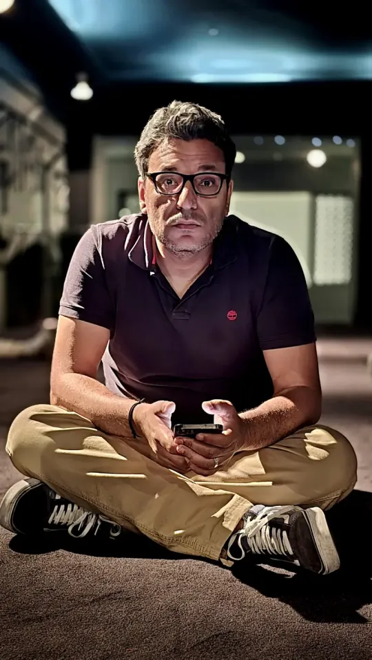
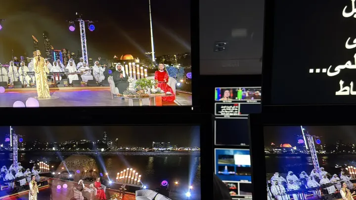
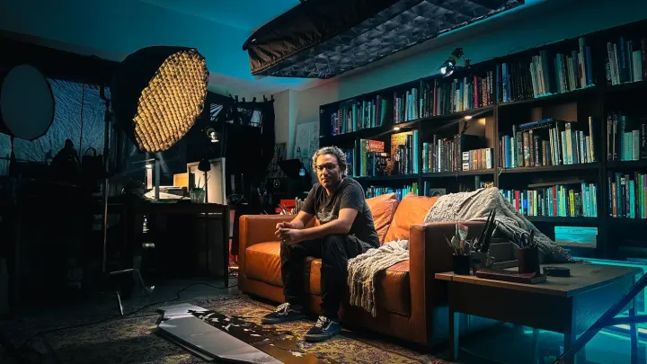
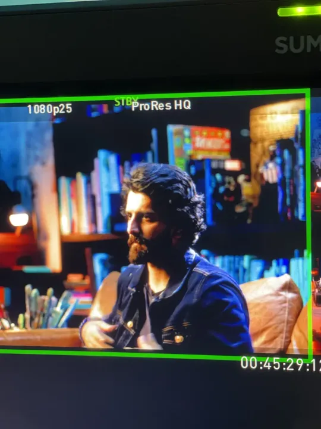
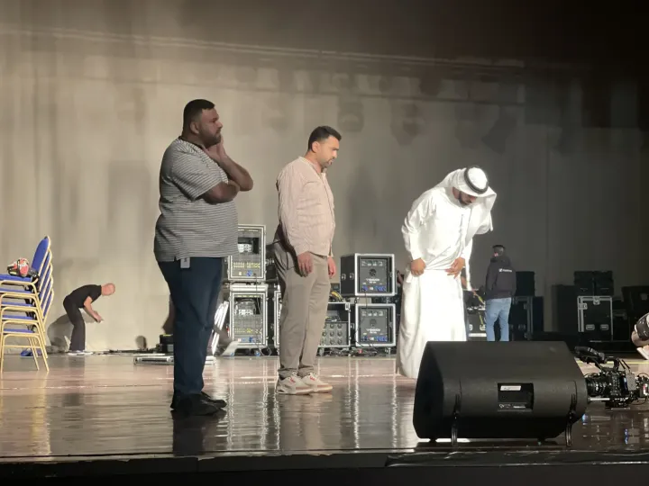
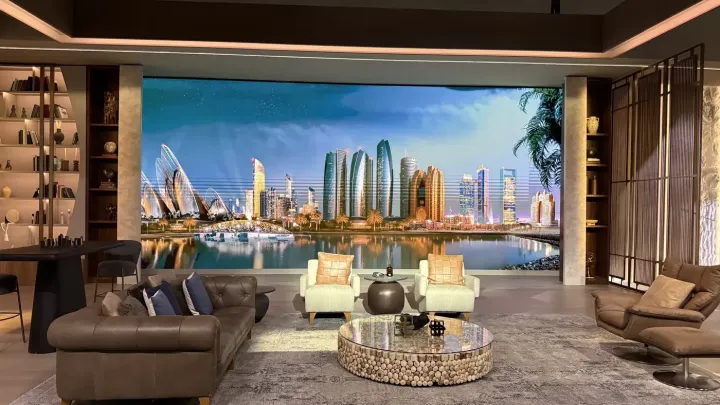

صوتين
كل مرة بتتغير اللغة، بس الحكاية بتفضل هي اللي بتحدد إزاي تتقال.

50 عاما نصون مكتسبات الوطن
إزاي تحكي تاريخ الحوكمة في الإمارات من غير ما تتحول الحكاية لأرقام وقوانين؟ ده كان التحدي وأنا بكتب سيناريو الفيلم الوثائقي لجهاز الإمارات للمحاسبة. رحلة من رؤية الشيخ زايد وبدايات الاتحاد، لحد بناء منظومة بتحافظ على مكتسبات الوطن. حكاية بتتروى من خلال شهادات شخصيات بارزة، زي معالي الدكتور أنور قرقاش، ومعالي زكي نسيبة، ومعالي د. علي النعيمي، وسعادة محمد العبار، والمهندس نجيب ساويرس. حاولت فيها أخلي الواقع هو اللي يتكلم ويحكي للناس.
دوري من الفكرة للبحث، كتبت السيناريو والتعليق الصوتي.. وجهزت محاور المقابلات.

على الهوا
هنا الشغل ماشي زي ترتيب الحلقة.. كل برنامج له دوره. وإنت بتتنقل بينهم، نقطة حمرا بتمشي مع اللي بتقراه.. زي إشارة صغيرة بتقول إن الحكاية دي جه وقتها.

موجات
في الموسم السابع من «موجات» سنة 2026، الحكايات مع دكاترة وخبراء.. أربع حلقات منهم تحت، اختار اللي يشدك.
دوري حطيت شكل الموسم.. واخترت الضيوف والمواضيع، وحضرت الأسئلة وسكريبت المذيع.


أوتو بلس
«أوتو بلس» سنة 2025.. 15 حلقة لعشاق العربيات، قاعدين على كنبة الاستوديو. مفيش طريق قدامنا هنا.. بس فيه كلام كتير عن العربيات.
دوري اشتغلت على شكل البرنامج واختيار ضيوفه ومواضيعه.. وكتبت الأسئلة والسكريبت.
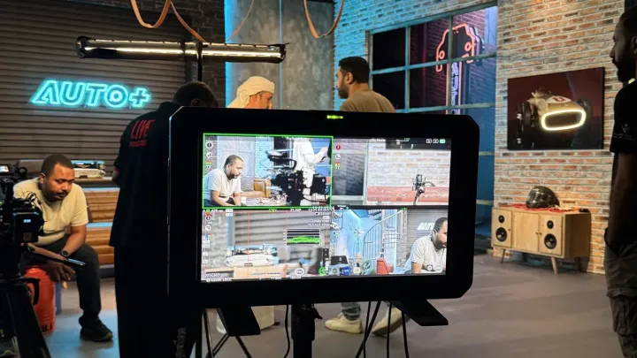
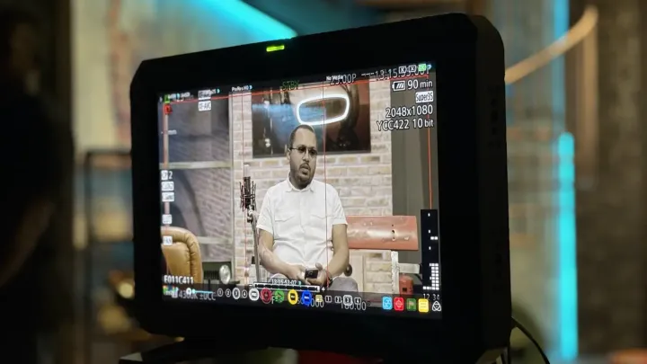


تعابير أبوظبي
من 2023، «تعابير أبوظبي» في موسمين بيدخل مراسم فنانين إماراتيين.. نشوف الفن البصري من المكان اللي بيتعمل فيه، مش من بعيد.
دوري اخترت الفنان والحكاية.. وحضرت الأسئلة، وكتبت السكريبت والتعليق الصوتي.

تجربة شيف
في «تجربة شيف» سنة 2025، الشيف الإيطالي جوزيبي إيانوتي بيقدم وصفات إماراتية بنكهات جاية من مطابخ تانية.. ومعاه سالم سيف المزروعي.
دوري اشتغلت على شكل البرنامج.. وكتبت السكريبت والتعليق الصوتي.

التغطيات الحية
من 2024 لـ2026، التغطيات الحية من قلب المناسبة.. عيد الاتحاد 54، والأعياد، ورأس السنة. مفيش زرار يعيد اللحظة لما الكلام يطلع على الهوا.
دوري خططت للتغطيات.. وكتبت كلام المذيعين على الهوا، والتعليق الصوتي.
 عيد الاتحاد 54برومو التغطية الخاصة
عيد الاتحاد 54برومو التغطية الخاصة- عيد الاتحاد 54 · التغطيةقائمة تشغيل على يوتيوب
- أكملوا المسيرة · الشيخ محمد بن خليفة آل نهيانقناة الإمارات · مارس 2024
- أكملوا المسيرة · حسن بن محمد الشيخقناة الإمارات · مارس 2024
 من العايدينعيد الفطر · قناة أبوظبي · مارس 2026
من العايدينعيد الفطر · قناة أبوظبي · مارس 2026- من العايدين · فلر عيد الأضحىكتبت السكريبت · رحلة أغاني العيد عبر الزمن · يونيو 2025
- من العايدين · كواليس التصويرريل على إنستغرام · يونيو 2025
- فعاليات · فلر لقناة أبوظبيكتبت السكريبت · أبريل 2025

حملة مديم ونمو
حملة على قناة أبوظبي مع دائرة تنمية المجتمع، لبرنامجي «مديم» و«نمو».. وفكرتها كلها في سطر: يقولون أو ما يقولون، عيالنا ذخرنا ورايتنا.
دوري كتبت سكريبتات الحملة وطورت سيناريوهاتها.

مساء أبوظبي
«مساء أبوظبي».. 6 مواسم على الهوا. ضيف في الاستوديو، ومراسل في الميدان، وترند بيخبط على باب الحلقة من غير ميعاد.
دوري جهزت الفقرات والضيوف والترند.. وكتبت أسئلة الضيوف وسكريبت المذيعين.
- الحلقات كاملةعلى منصة ADMN في STARZPLAY
- مقاطع الموسم السادسأكتر من 200 مقطع · قائمة تشغيل على يوتيوب قناة أبوظبي
- حلقة 6 نوفمبر 2026مقطع على يوتيوب
 حلقة 30 أكتوبر 2026انطلاق مهرجان الشيخ زايد
حلقة 30 أكتوبر 2026انطلاق مهرجان الشيخ زايد- روكي.. حلم اتحققتقرير نادي السينما · 2 أكتوبر 2026
- عدنان الطليانيتقرير أيقونات، مع أولى مباريات المنتخب في كأس الخليج · 24 سبتمبر 2026
- الأب الروحي.. الفيلم اللي كان ممكن ما يشوفش النورتقرير نادي السينما · 16 سبتمبر 2026

نكهات شبابية وسر الطبخة
في رمضان 2025 و2026، «نكهات شبابية» و«سر الطبخة».. 45 حلقة بين أكلات كلاسيكية بلمسة حديثة، ووصفات فيها مكون محدش كان متوقعه.
دوري اشتغلت على شكل البرنامجين.. وكتبت السكريبت والتعليق الصوتي.

آخر الأسبوع
«آخر الأسبوع».. 3 مواسم و37 حلقة، بنلف فيها على فعاليات الإمارات وأماكن الويك إند. عشان السؤال المعتاد: نروح فين؟ يلاقي إجابة.
دوري جهزت الفقرات والضيوف والترند والأسئلة.. وكتبت السكريبت.
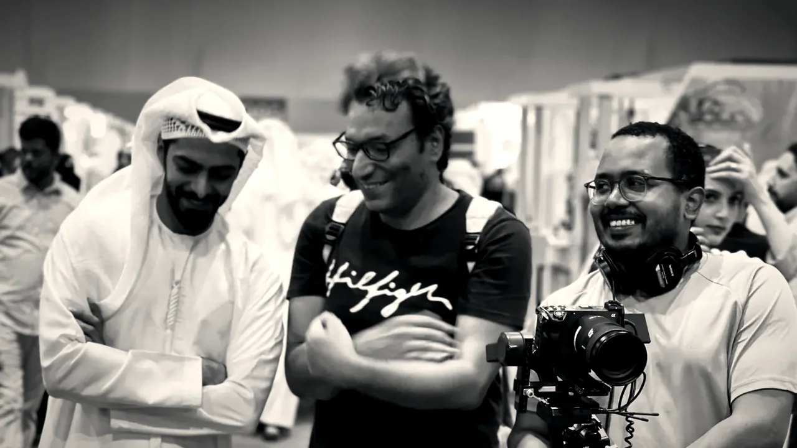
اللقطة.. وراها ناس
ورا كل لقطة ناس.. في غرفة التحكم قدام حيطة الشاشات، ووسط كثبان الصحرا، وورا الكاميرا في معرض. اللي قدام الكاميرا بيبان.. واللي وراها بيسند الحكاية.
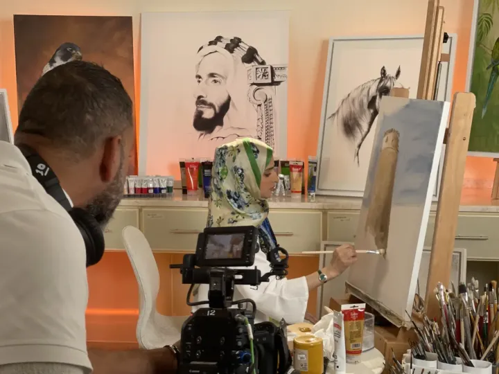
CAM 1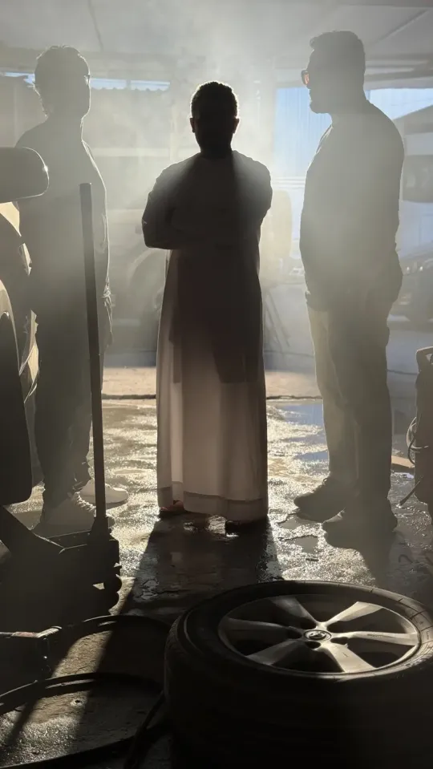
CAM 2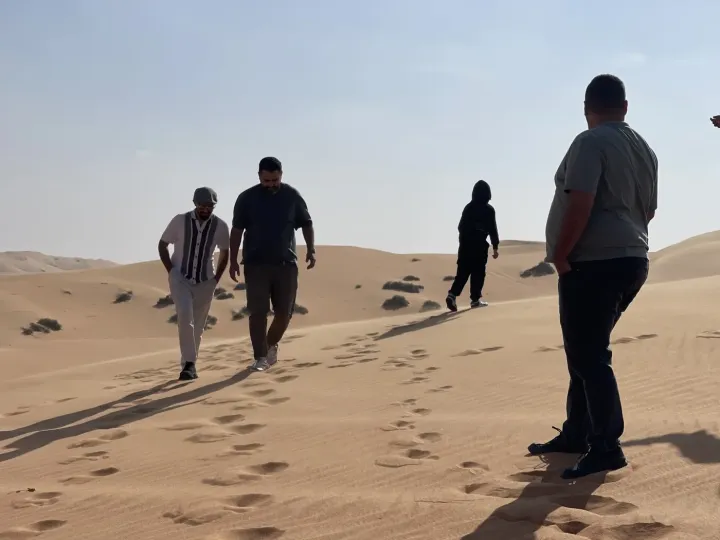
CAM 3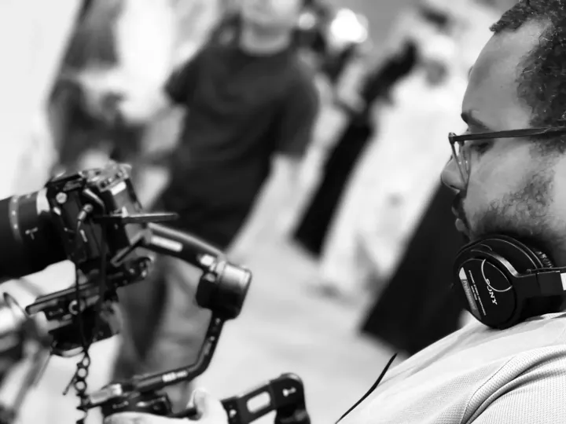
CAM 4 CAM 5
CAM 5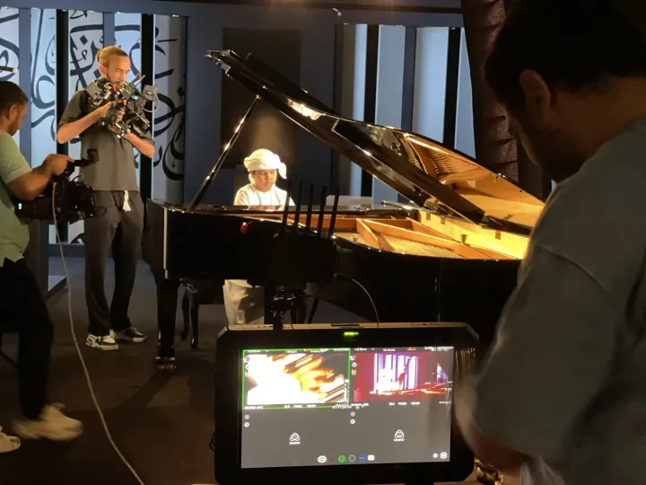
CAM 6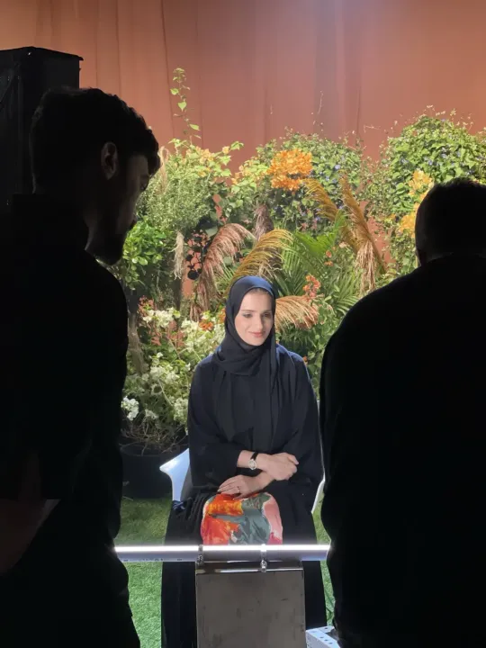
CAM 7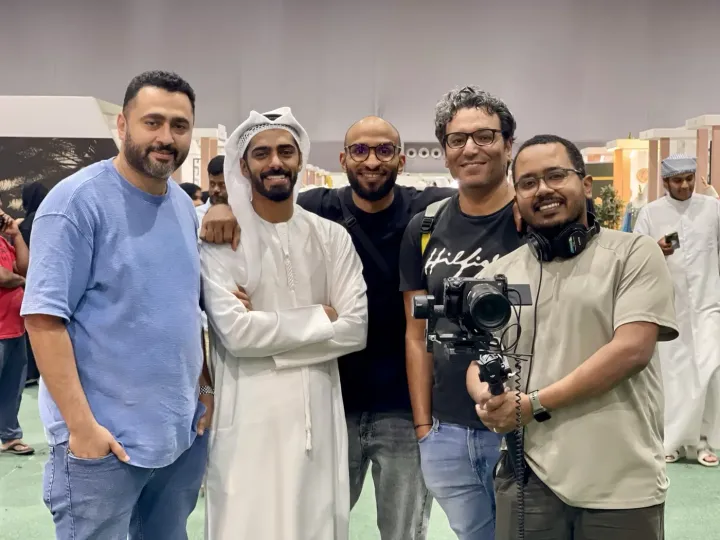
CAM 8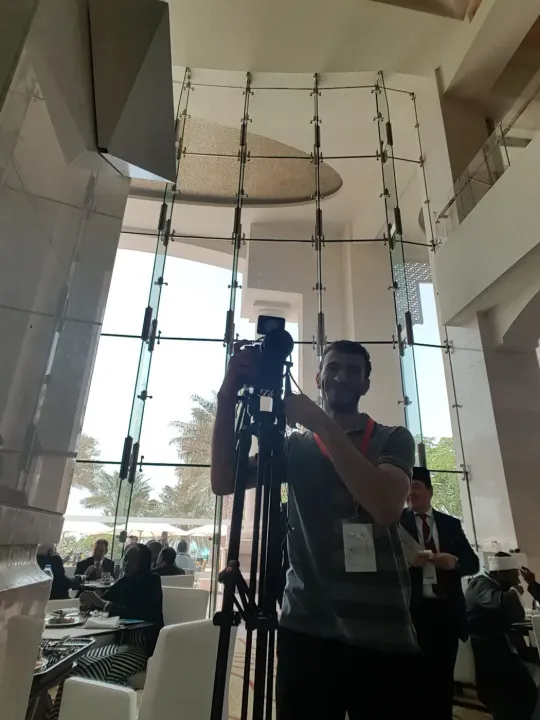
CAM 9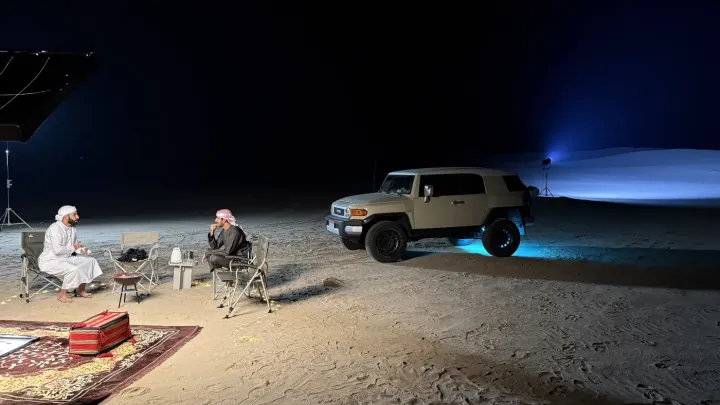
CAM 10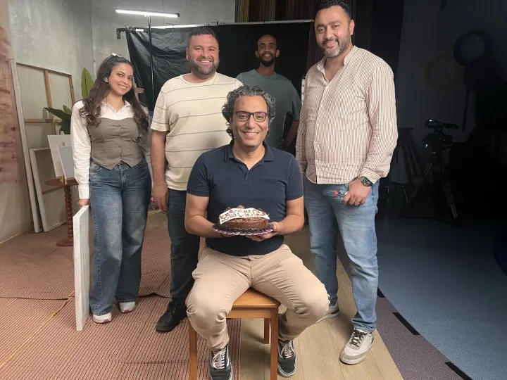
CAM 11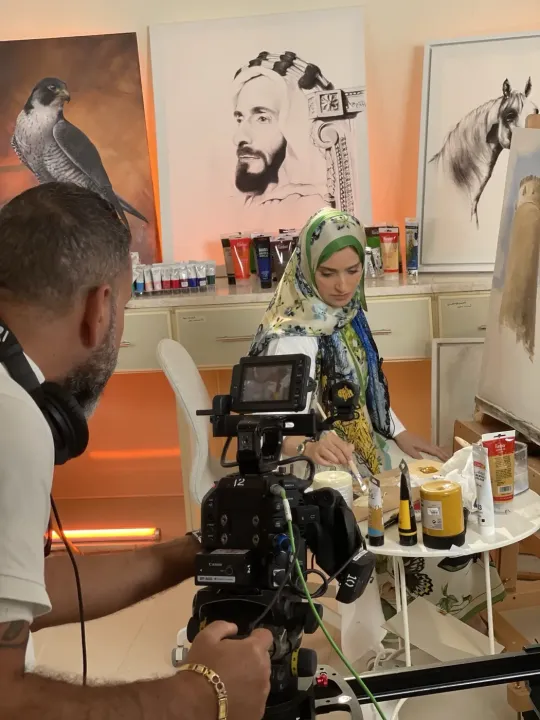
CAM 12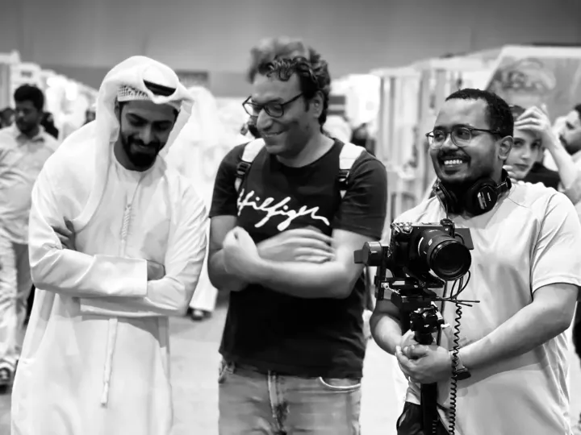
CAM 13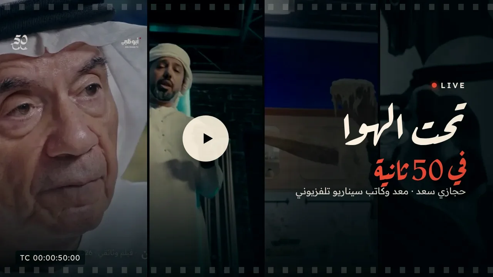
تحت الهوا في 50 ثانية
التترات
- إعداد وسيناريوحجازي سعد
على الشاشة
- من الفكرة للبحث، كتبت السيناريو والتعليق الصوتي.. وجهزت محاور المقابلات.الفيلم الوثائقي50 عاما نصون مكتسبات الوطن · قناة أبوظبي · 2026
- اشتغلت على شكل البرنامج.. وكتبت السكريبت والتعليق الصوتي.تجربة شيف2025
- حطيت شكل الموسم.. واخترت الضيوف والمواضيع، وحضرت الأسئلة وسكريبت المذيع.موجاتالموسم السابع · 2026
- اشتغلت على شكل البرنامج واختيار ضيوفه ومواضيعه.. وكتبت الأسئلة والسكريبت.أوتو بلس2025 · 15 حلقة
- اخترت الفنان والحكاية.. وحضرت الأسئلة، وكتبت السكريبت والتعليق الصوتي.تعابير أبوظبيالموسم الأول والتاني · 26 حلقة · من 2023
- جهزت الفقرات والضيوف والترند.. وكتبت أسئلة الضيوف وسكريبت المذيعين.مساء أبوظبي6 مواسم
- خططت للتغطيات.. وكتبت كلام المذيعين على الهوا، والتعليق الصوتي.التغطيات الحية والمناسبات الوطنيةعيد الاتحاد 54 · عيد الفطر وعيد الأضحى · رأس السنة · إطلاق خريطة رمضان 2025 · مهرجان الشيخ زايد · مهرجان ليوا للرطب
- الحلقة الخاصة وتقاريرها.اليوم الوطني الكويتي2024
- الفكرة والكتابة.فلرات القناةالمناسبات الوطنية والأعياد
- كتبت سكريبتات الحملة وطورت سيناريوهاتها.حملة مديم ونموقناة أبوظبي · مارس 2026
- الكتابة.تقارير مساء أبوظبيأيقونات · أكلة الأسبوع · نادي السينما · غرائب · بالأرقام · كل يوم سؤال · ترانا بنظهر أقوى
- اشتغلت على شكل البرنامجين.. وكتبت السكريبت والتعليق الصوتي.نكهات شبابية وسر الطبخةرمضان · 2025–2026 · 45 حلقة
- جهزت الفقرات والضيوف والترند والأسئلة.. وكتبت السكريبت.آخر الأسبوع3 مواسم · 37 حلقة
- الإعداد.صباح الإماراتالبرنامج الصباحي · 2023
قبل التلفزيون
- محرر أولInsight Event Managementأبوظبي · 2022–2023
- منتج أخبار أولالشرق للأخباردبي · 2020–2022
- منتج أخبار أولالعين الإخباريةأبوظبي · 2017–2020
- محرر ديسك المنوعاتصحيفة الخليجالشارقة · 2014–2017
- محرر أول، القسم السياسيجريدة الوطنالقاهرة · 2012–2014
- صحفي وصانع محتوىالشروقالقاهرة · 2010–2012
وفي الآخر.. سؤال واحد
كل مرة أبدأ، بسأل نفسي: ليه المشاهد هيفضل معانا لحد الآخر؟ يمكن عشان تفصيلة صغيرة، أو سؤال جه في وقته، أو حكاية فتحت باب للتانية. السؤال ده بيفضل معايا.. حتى بعد ما الهوا يخلص.
© 2026 حجازي سعد · اللينكات بتفتح صفحات النشر الأصلية للقنوات والمنصات.